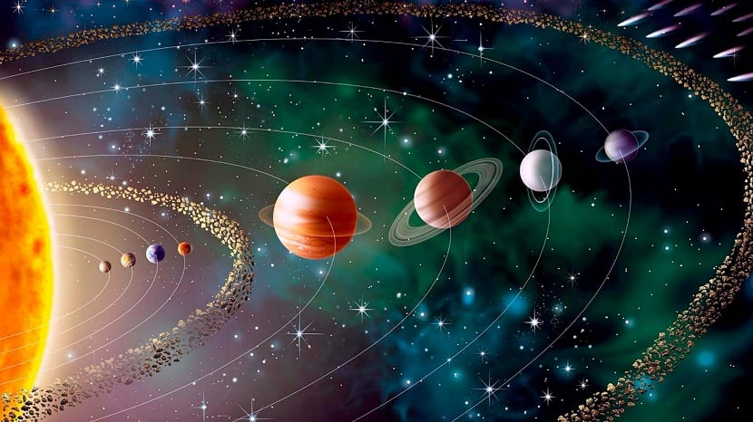

El Sistema Solar es un sistema planetario de la galaxia Vía Láctea que se encuentra en uno de los brazos de ésta,
conocido como el Brazo de Orión.
Está formado por una única estrella llamada Sol, la cual le da nombre a este sistema,
y ocho planetas, más el conjunto de planetas enanos que orbitan alrededor de la estrella,
de los cuales los más conocidos son: Plutón, (136199) Eris, Makemake, Haumea y Ceres; al igual que el espacio interplanetario comprendido entre ellos.
En la actualidad se conocen también otros 283 sistemas planetarios orbitando alrededor de otras estrellas de los cuales de 23 se conocen dos exoplanetas,
de 9 se conocen tres, de uno se conocen cuatro y de otro cinco.
Según las últimas estimaciones, el Sistema Solar se encuentra a unos 28 mil años-luz del centro de la Vía Láctea, nuestra galaxia.

Los planetas, la mayoría de los planetas y todos los cinturones de asteriodes orbitan alrededor del Sol, en la misma dirección siguiendo órbitas elípticas en sentido antihorario si se observa desde encima del polo norte del Sol. El plano aproximado en el que giran todos estos se denomina eclíptica. Algunos objetos orbitan con un grado de inclinación considerable, como Plutón con una inclinación con respecto al eje de la eclíptica de 18º, así como una parte importante de los objetos del cinturón de Kuiper. Según sus características, y avanzando del interior al exterior, los cuerpos que forman el Sistema Solar se clasifican en:
Poco después de su descubrimiento en 1930, Plutón fue clasificado como un planeta por la Unión Astronómica Internacional (UAI). Sin embargo, basándose en descubrimientos posteriores, se abrió un debate por algunos, con objeto de reconsiderar dicha decisión. Finalmente, el 24 de agosto de 2006 la UAI decidió que el número de planetas no se ampliará a 12, como se propuso en la reunión que mantuvieron sus miembros en Praga, sino que debía reducirse de 9 a 8. El gran perjudicado de este nuevo orden cósmico fue, nuevamente, el polémico Plutón, cuyo pequeño tamaño y su evolución dinámica en el Sistema Solar llevó a los miembros de la UAI a excluirlo definitivamente de su nueva definición de planeta.